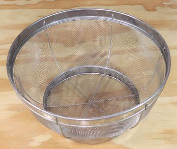
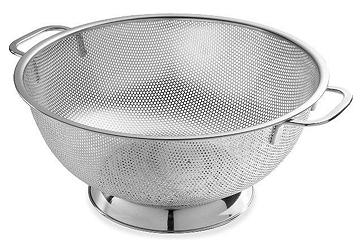

Colander

Colanders are free standing draining or straining devices, most of which
hold 4 to 5 quarts. Today many are made of stainless steel with lots of
holes punched in them, but mine is made the same as a wire strainer, except
without handles and on a ring stand. Others are made of plastic. Before
the mid 20th century, most were made of enameled steel. The spin basket
in most Salad Spinners is a fine colander.
The Colander is an ancient device. Both bronze and clay versions have been
found in Roman sites, but it certainly must date from prehistoric times.
Actually, I don't use a Colander at all, because hanging above my sink
is a 10-1/2 inch wire strainer with helper handle that straddles my sink
tubs just fine.
More on Kitchen Gear.

Here is one of the best of the modern stainless steel Colanders. It has far
more holes than most, so will drain faster. It would be much easier to clean
than my wire mesh colander, and I'd get one if I felt the need for a colander.
It's the Bellemain 5 quart Micro-perforated colander, and costs about 2022
US $20 on-line.
ke_colanz 220210 - www.clovegarden.com
©Andrew Grygus - agryg@clovegaden.com
Photos on this page not otherwise credited are ©
cg1 - Linking to and non-commercial
use of this page permitted